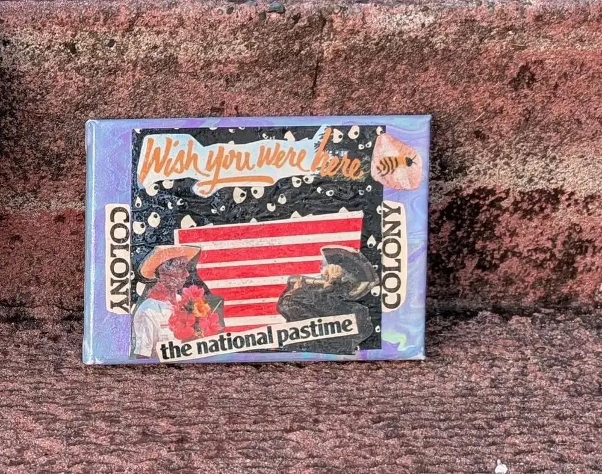
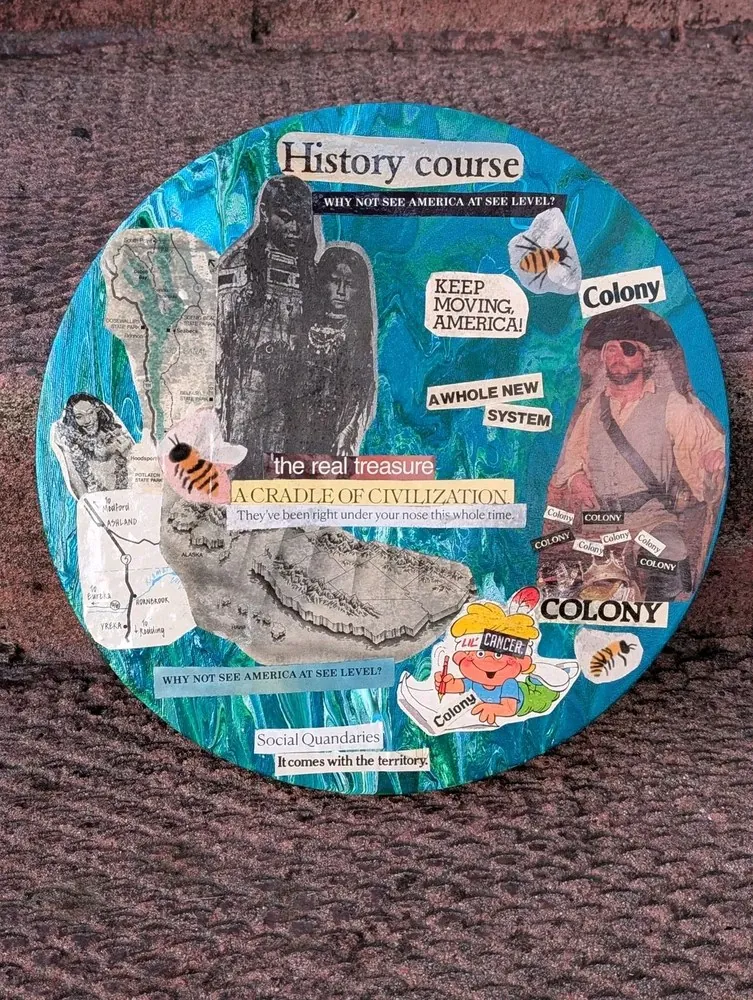
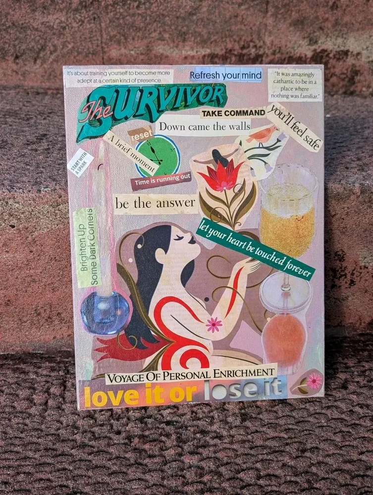
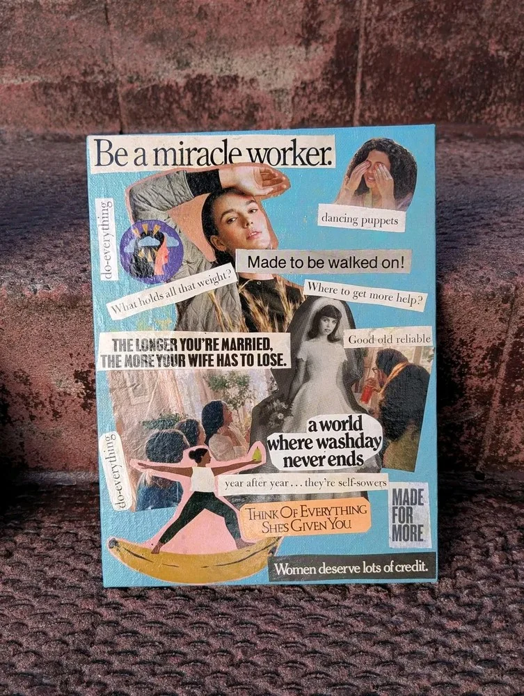
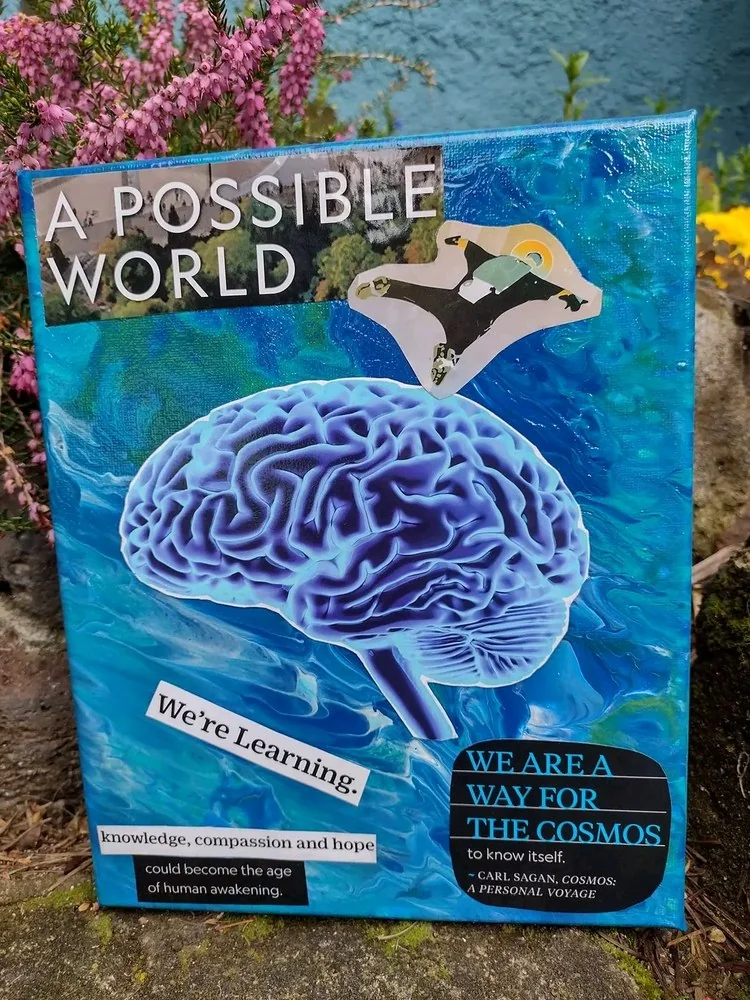
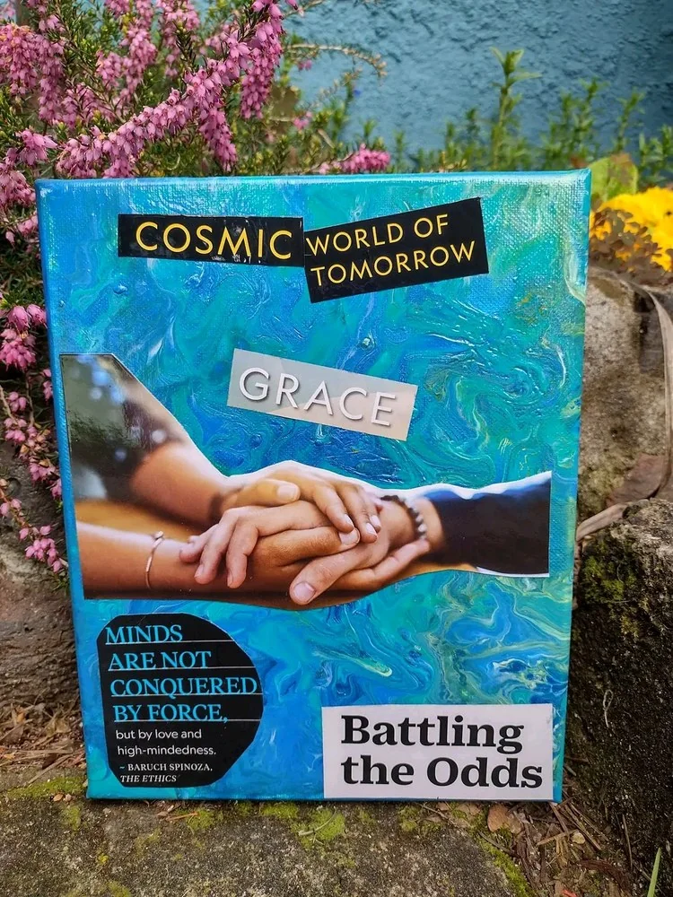

A NeuroHome by the river · Cathlamet, Washington
NeuroHome
Come in. The light is coming through the firs and bouncing off the river, and there are candles going in every room.
The window
Out past the firs, the Julia Butler Hansen Bridge crosses to Puget Island, the county ferry heads over to Westport, and downriver at Skamokawa, Redmen Hall watches from its hill.
The creativity corner
Everything I've made, or am still making.
Books
Autism in America
Autistic Standpoint Theory
Spirolateral Productions, 2025, under a Creative Commons licence.
Podcast
Autistic Standpoint Theory
My series on the Autistic Culture Podcast Network.
Talk show
Autistic Standpoint Theory the Talkshow
A Spirolateral Productions show made in partnership with ACPN, rooted in the idea that autistic people are not subjects to be studied, but human lives to be lived, and the experts on our own lived experiences.
Film
Documentaries
Why Doesn't She Just Leave?, forthcoming, 2026.
The desk
What's on the radio. Each one opens in Spotify, and nothing plays until you choose it.
- Classical Bangers, a playlist by Classical Bangers
- Daddy Tchaikovsky for Sleep, a playlist by Graciemay, 20 songs
- Holy Mother of God, a playlist by Marina Logan, 22 songs
- 👑, my own playlist, 51 songs
- It's Already Mine, my own playlist, 75 songs
- Bass Drops 2026, a playlist by Seal Network, 231 songs
- Mood Booster: the Happy Playlist, a playlist by Ashley James, 119 songs
- Instant Dopamine, a playlist by another Spotify listener, 210 songs
- Celtic Punk, a playlist by Spotify, 50 songs
- The Best of The Chieftains, an album of traditional Irish music by The Chieftains, 1992, 12 tracks
Instruments
Within reach of the desk:
- hand drums
- hammered dulcimer
- guitar
- keyboards
- penny whistles
- violin
- bodhrán, the Irish frame drum
- bagpipes
The bookshelf
My favourites, the ones I keep going back to.
- American GodsNeil Gaiman
- Bulfinch's MythologyThomas Bulfinch
- OtherearthJason Segel and Kirsten Miller
- Going to Pieces Without Falling ApartMark Epstein
- 1491Charles C. Mann
- OriginJessica Khoury
- Shadows of Forgotten AncestorsCarl Sagan and Ann Druyan
- The Chalice and the BladeRiane Eisler
- IllusionsRichard Bach
- Love & SurvivalDean Ornish
- RabbitsTerry Miles
- Walden TwoB.F. Skinner
- The Woman with the Alabaster JarMargaret Starbird
- Venus and AphroditeBettany Hughes
- The Pleasure of Finding Things OutRichard P. Feynman
- Outer EarthRob Boffard
- The Developing MindDaniel J. Siegel
- I Am Because You AreJacob Lief with Andrea Thompson
- The Lessons of HistoryWill and Ariel Durant
- The End of the World NewsAnthony Burgess
- And Another Thing...Eoin Colfer
- ChaosJames Gleick
- Be Not Afraid of LoveMimi Zhu
- Be Here NowRam Dass
- Anti-OedipusGilles Deleuze and Félix Guattari
- The Hero with a Thousand FacesJoseph Campbell
The art on the walls
Collages I've made, cut from old magazines and maps and laid over poured paint.
Some pieces are for sale, and I take commissions. For prices or to ask about a piece, write to me at isha@neurohomes.org.






Outside the door
Step out and there's the garden, and past it the bee yard. There's usually a jar of honey on the stump.
Good morning. How are you doing? Well, thanks.
Every front door here opens onto shared green space, with a porch in between so you can stop, watch the path, and say hello when you're ready.
The map by the door
25 tiny homes in five clusters around a shared commons, laid out like a neuron. Each cluster is two facing pairs with a fifth home at the back. This house is the second home on the upper left branch.
How the house is built
From the NeuroHomes Community Design Standards.
- Every home has its own kitchen and bathroom.
- Shared rooms are split into gathering spaces and quiet retreat rooms that can never be booked for a group.
- Paths and entries let you choose when to be social, with no bottlenecks at the door.
- Doorbells and alarms both chime and light up.
- Outside there are sheltered sensory nooks, native plants, food gardens and dark-sky lighting.
The community around it
This home is one of 25 at the NeuroHomes Community. Here is what the rest of the village shares.
The commons
Shared buildings at the centre, split into rooms for gathering and quiet retreat rooms that can never be booked for a group event.
NeuroBloom
A neuro-affirming services hub on campus, run by NeuroBloom Center under a formal partnership. Plans include counselling, speech and communication support, adaptive fitness and a sensory gym, holistic wellness care, and a community café.
Peer support
A paid peer support network, weekly community planning with a different facilitator each time, and peer help finding a way through benefits, healthcare and government systems.
A path to self-sufficiency
NeuroHomes is working toward paid roles within the community and placements with local employers, as opportunities allow. Hours are planned with care so that work doesn't put anyone's SSI at risk.
The garden
Food garden beds in the commons, native plantings, and open lawns with natural edges.
Paths and nooks
Wide, level, step-free paths, with benches, shaded alcoves and sheltered sensory nooks along the way. Outdoor lights are shielded for dark skies.
A home to keep
Permanent supportive housing, run on Housing First principles. Residents are tenants with full tenancy rights. This is a home, and not a clinical facility.
Credits
- Room and choices: Isha Snow. House specifications from the NeuroHomes Community Design Standards, by NeuroHomes.
- Podcast episodes: Autistic Standpoint Theory, hosted by Isha Snow on the Autistic Culture Podcast Network, with guests Sam Farmer and Dani Stephens.
- Talk show: Autistic Standpoint Theory the Talkshow, hosted by Isha Snow, Spirolateral Productions, with guests Dani and Lanita. The show description is Isha's own words from YouTube.
- Radio: Spotify playlists by Classical Bangers, Graciemay, Marina Logan, Ashley James, Seal Network, Spotify itself and another Spotify listener, plus two of Isha's own, "👑" and "It's Already Mine", and the album The Best of The Chieftains (1992), traditional music performed by The Chieftains.
- Community details: from neurohomes.org.
- Porch greeting: from the NeuroHomes concept video, "A place where everyone belongs".
- Landmarks in the window: the Julia Butler Hansen Bridge (1939) to Puget Island, and Redmen Hall in Skamokawa (1894), now the River Life Interpretive Center run by the Friends of Skamokawa.
- Collages: by Isha Snow. The collages quote Carl Sagan, from Cosmos: A Personal Voyage (1980), and Baruch Spinoza, from the Ethics (1677).
- Drawings: made by hand in SVG for this room. The village map is redrawn from the NeuroHomes dendritic site concept.
- Typefaces: Young Serif by Bastien Sozeau; Atkinson Hyperlegible by Applied Design Works for the Braille Institute; IBM Plex Mono by Mike Abbink with Bold Monday for IBM. All under the SIL Open Font License.
- Built with the help of Claude, an AI made by Anthropic.
HOW LOUD DO YOU WANT IT?
Starts wherever your device says. Nothing moves, flashes, or plays until you say so.
Job marker — a jar of honey, set down on the floor
You have found a job marker. The Adventurer’s Guild is a shopfront on the street, and it posts jobs that send you round these rooms. Take the code below to its board and that job is done. Nothing here is scored, nothing expires, and one is a perfectly good number of jobs to do.
The job: Somewhere nobody can book
Before the code: What can the quiet retreat rooms in the commons never be booked for?
Hint 1
It is in How the house is built, and again under The commons.
Hint 2
The opposite of being on your own.
Last hint
More than one person, meeting together.
Give me the answer
The answer is A group. A group: the commons are split into gathering spaces and quiet retreat rooms, and the retreat rooms can never be booked for a group event, so there is always somewhere quiet to go.
Taking the answer is a real way through this, not a lesser one. Nothing is watching and nothing is written down.
Quest code: HONEYJAR
That is the one.
A group: the commons are split into gathering spaces and quiet retreat rooms, and the retreat rooms can never be booked for a group event, so there is always somewhere quiet to go.
Quest code: HONEYJAR